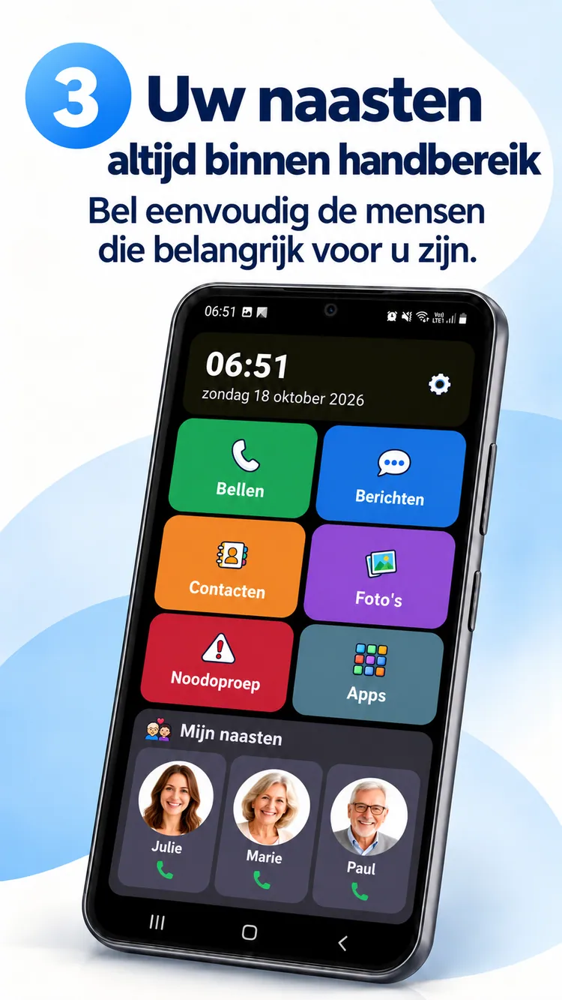
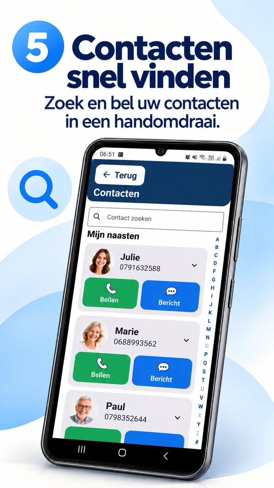
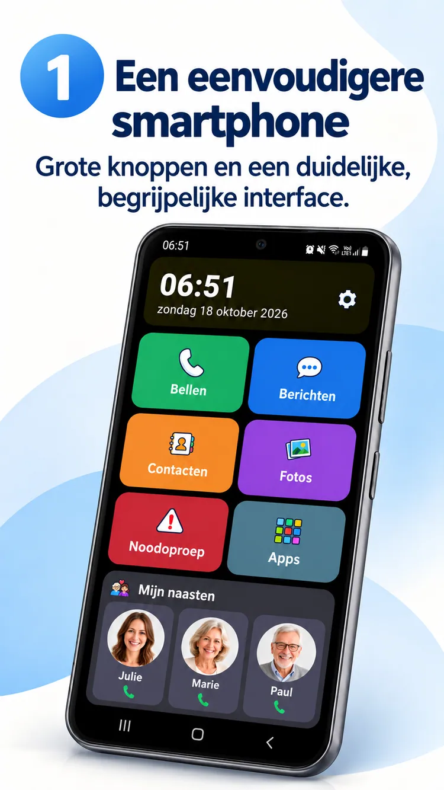

01
Eén foto. Eén gesprek.
Dierbaren altijd dichtbij.


Een helder Android-startscherm, dierbaren binnen handbereik en meer ruimte voor wat echt telt.
ClikoSpido maakt het startscherm van compatibele Android-telefoons overzichtelijk, vertrouwd en aanpasbaar. Minder onzekerheid en meer zelfstandigheid.
Grote knoppen, handige functies en alle ruimte voor het belangrijkste.

Bellen, berichten, contacten, foto’s, camera en een noodsnelkoppeling zijn direct bereikbaar.
Illustratieve promotieafbeelding; de geïnstalleerde app kan afwijken.
Dierbaren altijd dichtbij.

Groot toetsenblok en leesbare bediening.
Contactfoto’s en alfabetisch zoeken.

Een naaste kan de weergave aanpassen, toegestane apps kiezen en instellingen met een pincode beschermen.
Bekijk acht officiële promotiebeelden in het Nederlands.

Maak kennis met ClikoSpido via een korte Nederlandstalige video.
Video afspelenHeldere antwoorden voordat je begint.
Ja, op compatibele Android-smartphones als standaardstartscherm.
Nee. Je kunt een bestaande compatibele Android-telefoon vereenvoudigen.
Nee. De knop Berichten opent de bestaande berichten-app.
Nee. Hij kan een gekozen contact bellen, maar vervangt geen officiële hulpdienst.
Een interface die dagelijkse handelingen makkelijker maakt.
Terug naar boven